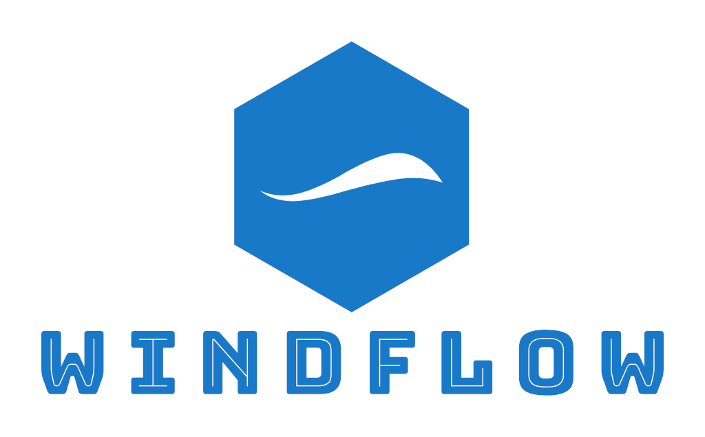

A C++ Data Stream Processing Parallel Library for Multicores and GPUs
API Example
In this page, we present a simple example of a streaming application in WindFlow. The example showcases a well-known streaming benchmark: WordCount.
The Source operator generates a stream of text lines. The second operator, Splitter, receives these lines and splits them into individual words, which are then passed to the next operator, Counter. The Counter maintains and updates the count of each distinct word it receives, sending a (word, count) pair to the Sink with the current counter value. While the Splitter and Sink are stateless operators, the Counter is stateful and operates in a keyed (key-by) manner. The figure below shows a schematic view of the application’s logical data-flow graph.

Below we report some code snippets to illustrate the API. The Source can be defined by implementing its functional logic as a functor, a lambda, or a C++ function. In all cases, the logic must conform to specific admissible signatures in order to be used to instantiate a Source operator. In the snippet below, the source logic is implemented as a C++ functor.
class Source_Functor
{
private:
std::vector<std::string> dataset; // contains the text lines as strings
public:
// Constructor
Source_Functor(const std::vector<std::string> &_dataset):
dataset(_dataset) {}
// Functor logic
void operator()(wf::Source_Shipper<std::string> &shipper)
{
// generation loop
for (auto &line: dataset) {
shipper.push(line);
}
}
};
The Splitter is implemented as a FlatMap operator that can produce multiple outputs for each input. As with the Source, its functional logic can be provided as a function, a lambda, or a functor object (as in the snippet below), as long as it adheres to the required signature.
class Splitter_Functor
{
public:
// Functor logic
void operator()(const std::string &input, wf::Shipper<std::string> &shipper)
{
std::istringstream line(input);
std::string word;
while (getline(input, word, ' ')) {
shipper.push(std::move(word));
}
}
};
The Counter can be implemented as a Map operator that encapsulates an internal state partitioned by key (typically maintained in a hash table).
class Counter_Functor
{
private:
std::unordered_map<std::string, int> table;
public:
// Functional logic
std::pair<std::string, int> operator()(const std::string &word)
{
if (map.find(word) == map.end()) {
map.insert(make_pair(word, 1));
}
else {
map.at(word)++;
}
std::pair result(word, map.at(word));
return result;
}
};
Finally, we define the functional logic of the Sink as shown below.
class Sink_Functor
{
public:
// Functor logic
void operator()(std::optional<std::pair<std::string, int>> &input)
{
if (input) {
std::cout << "Received word " << (*input).first << " with counter " << (*input).second << std::endl;
}
else {
std::cout << "End of stream" << std::endl;
}
}
};
Once the functional logic of each operator has been defined, the operators must be created using their corresponding builder classes. During creation, the user can specify various configuration parameters for each operator, such as its name (for logging purposes), its level of parallelism, and other options.
Source_Functor source_functor(dataset);
wf::Source source = wf::Source_Builder(source_functor)
.withParallelism(2)
.withName("wc_source")
.build();
Splitter_Functor splitter_functor;
wf::FlatMap splitter = wf::FlatMap_Builder(splitter_functor)
.withParallelism(2)
.withName("wc_splitter")
.withOutputBatchSize(10)
.build();
Counter_Functor counter_functor;
wf::Map counter = wf::Map_Builder(counter_functor)
.withParallelism(3)
.withName("wc_counter")
.withKeyBy([](const std::string &word) -> std::string { return word; })
.build();
Sink_Functor sink_functor;
wf::Sink sink = wf::Sink_Builder(sink_functor)
.withParallelism(3)
.withName("wc_sink")
.build();
All operators (except Sinks) can be configured with a custom output batch size. In the example above, the Splitter operator uses a batch size of 10, meaning it emits its results in groups of 10 outputs at a time. This strategy can improve throughput at the cost of increased latency. If no batch size is specified, the default is zero—which disables batching—and operators emit outputs individually. Additionally, note that the Counter operator is declared with a key extractor, which enables key-by distribution between the Splitter and the Counter replicas.
Finally, the entire application can be executed by creating the streaming environment and adding the operators in the appropriate order. This is accomplished by leveraging two WindFlow programming constructs: the PipeGraph and MultiPipe classes. A PipeGraph can be instantiated by specifying two configuration options: the execution mode and the time policy.
The execution mode specifies how processing is performed in the data-flow graph with respect to input ordering. WindFlow provides three alternative modes:
- DETERMINISTIC: in this mode, the user must generate inputs in the Sources ordered by timestamp. The run-time environment guarantees that all operator replicas will process inputs in timestamp order. This execution mode prevents batching from being used and ensures deterministic execution, often at the expense of performance.
- PROBABILISTIC: in this mode, Source replicas may generate outputs in any order, but the run-time system still sorts items before applying the operators’ functional logic. To maintain ordering, some items may be dropped. This execution mode also prevents batching, but can offer a reasonable compromise between ordering requirements and performance when the application semantics tolerate the loss of a small number of inputs.
- DEFAULT: this is the default mode, which provides no ordering guarantees. Inputs are processed in a non-deterministic order, and temporal window-based computations rely on watermarks for progress. This execution mode allows batching in operators, as shown in the previous code snippets.
For what concerns the time policy, WindFlow supports two alternatives. With Ingress Time, timestamps are automatically generated by the Sources (as in this WordCount example, inside the Source functor), and watermarks are also automatically generated when using the DEFAULT execution mode. With Event Time, the user is responsible for emitting inputs in the Sources with a user-defined timestamp. Under this policy, watermarks must also be explicitly emitted by the user when operating in the DEFAULT execution mode.
The code fragment below shows the creation of the PipeGraph and the construction of the data-flow graph, which is then executed on a multi-core environment.
wf::PipeGraph topology("wc", Execution_Mode_t::DEFAULT, Time_Policy_t::INGRESS_TIME);
if (chaining) {
topology.add_source(source).chain(splitter).add(counter).chain_sink(sink);
}
else {
topology.add_source(source).add(splitter).add(counter).add_sink(sink);
}
topology.run(); // synchronous execution of the dataflow
In the code above, depending on the value of a boolean flag (chaining), the data-flow graph is created either by chaining stateless operators (to reduce thread oversubscription) or by keeping them separate. These two configurations result in different physical data-flow graphs, executed with five underlying threads in the former case (left-hand side figure below) and ten in the latter (right-hand side figure), based on the parallelism levels specified in the builders.
This example illustrates only a small portion of WindFlow’s expressive capabilities. WindFlow can generate complex data-flow graphs using split and merge operations on MultiPipes, enabling significantly richer streaming topologies. Interested readers can refer to the Doxygen documentation for a complete description of the API, and may also consult the synthetic examples and tests distributed with the source code.